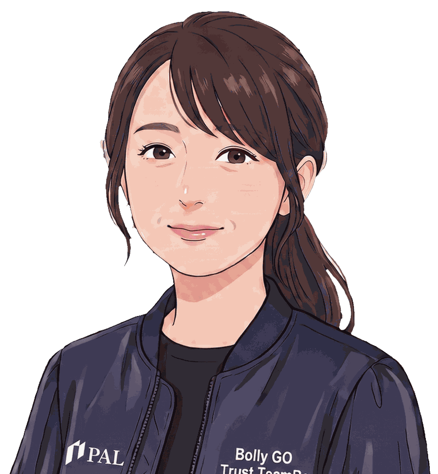
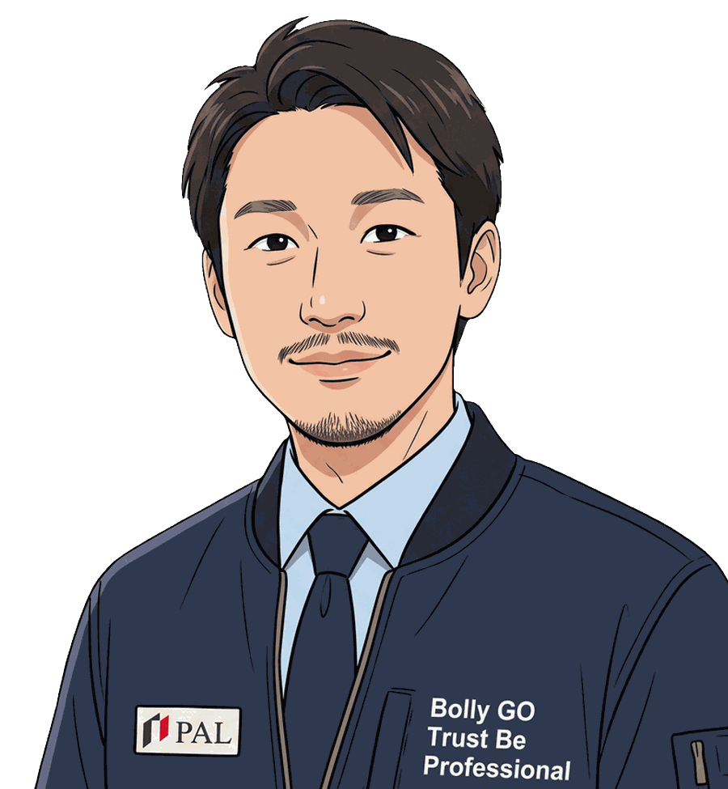
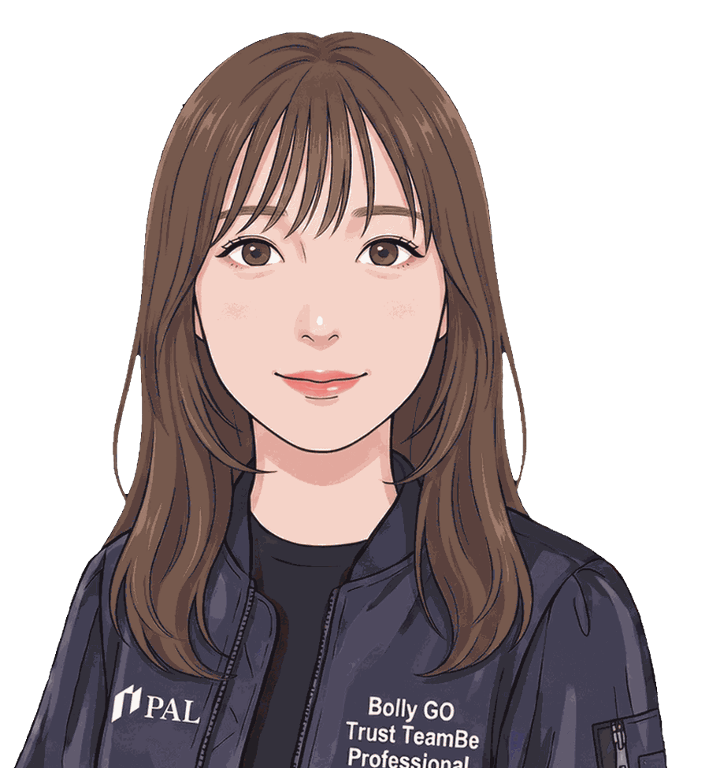

People
人を知る。
現場を動かす人、衛生を保つ人、輸送を支える人、技術で仕組みをつくる人。
異なる専門性が連携しながら、PALの仕事をつくっています。
各インタビューでは、仕事内容・他部署との連携・1日の流れ（A DAY IN THE LIFE）・これからのキャリアまでを掲載しています。

BPO / 現場運営現場を回し、改善をつくる
BPO／現場運営
計画から支える
BPO／クレンリネス課

DTS / 運送届けるまでが、物流。
DTS事業部 運送課 千葉営業所／所長

FDE開発したものを、現場まで見に行く
FDE
自分の手で
システム部
まず課題を見つける
エンゲージメント・新規営業
事業を前へ
総務部
※ 掲載名はイニシャル表記です。現在の募集状況は募集職種ページへ
Our values & people
PALが大切にすること、そこで働く人の姿勢。
PALが大切にする3つの価値観と、日々の仕事に表れる6つの姿勢。さらに、その姿勢を仕事で活かす3つの力をご紹介します。
-
01
現場の当事者となる
外から提案するのではなく、顧客の現場を請け負い、自分たちの責任で回す。だから、机上で終わらない課題に向き合えます。
-
02
個を尊重し、平等に接する
上下や勤続年数で判断されない。互いを個として尊重し合う土台があるから、誰もが対等に意見を出せます。
-
03
自分の「手」で変えていく
提案するだけでなく、自分たちが現場に立ち、データと技術で変えていく。考える・つくる・動かすが地続きです。
Who we look for
PALで働く人に、共通していること。
採用基準のチェックリストではなく、日々の仕事のなかで実際によく見られる姿勢です。
01
挑戦する失敗を恐れず、まず動いてみる。
02
自ら動く待つのではなく、自分から課題を見つける。
03
未来を見る今だけでなく、その先まで考える。
04
変化を楽しむ変化を、新しい可能性として捉える。
05
学び続ける知らないことに好奇心を持つ。
06
相手を尊重する立場を越えて、相手の考えに耳を傾ける。
その姿勢を、仕事で活かすための3つの力。
-
STRUCTURE
構造で捉える複雑な課題を整理し、本質を見る。
-
TECHNOLOGY
テクノロジーフレンドリー新しい技術を、まず使ってみる。
-
COMMUNICATION
コミュニケーション立場を越えて、相手と向き合う。